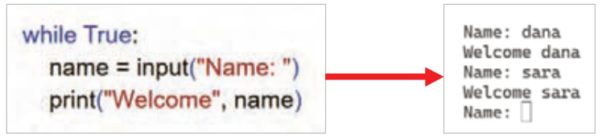
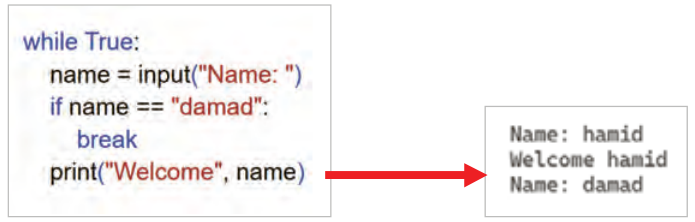
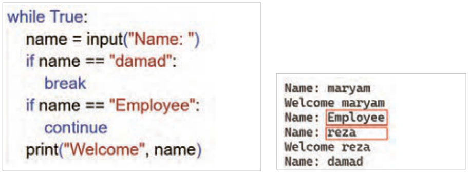
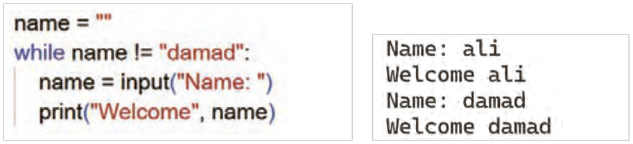
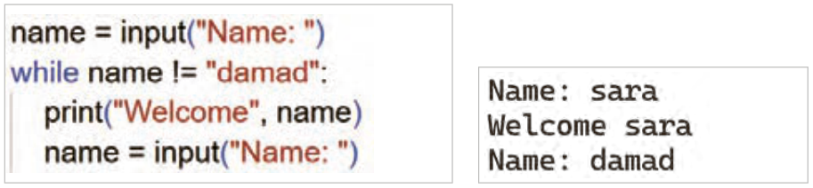
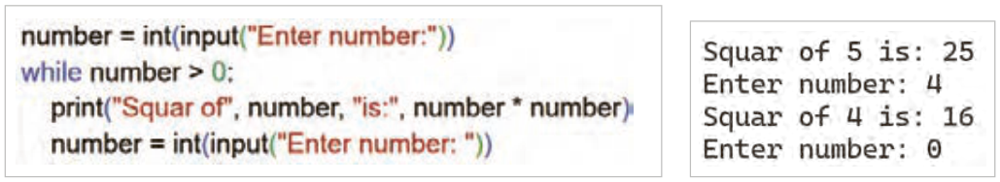
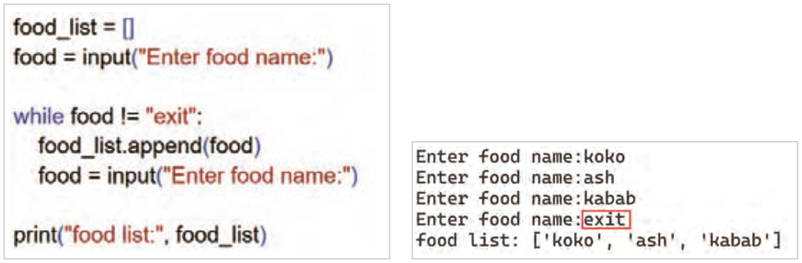
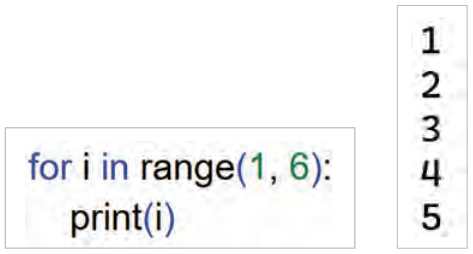
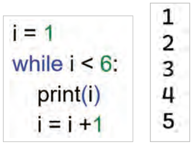

این حلقه مجموعهای از دستورات را تا زمانی که شرط حلقه True باشد، اجرا میکند و هر زمان که شرط حلقه False شود، دیگر حلقه اجرا نمیشود و اجرای حلقه پایان مییابد. از این نوع حلقه معمولاً زمانی استفاده میشود که تعداد دفعات تکرار حلقه از قبل مشخص و معین نباشد.
while یا : شرط حلقه while condition :
statements → دستورات بدنه حلقه
مثال: شخصی در ابتدای یک تالار غذاخوری به میهمانان یک مراسم عروسی خوشامد میگوید. به او گفته شده که آنجا بایستد و بعد از پرسیدن نام آنها به میهمان وارد شده خوشامد بگوید و برای پایان کار او محدودیتی در نظر گرفته نشده است. برنامه زیر به کمک حلقه while این کار را انجام میدهد (شکل88).

شکل ۸۸
توضیح کدهای برنامه: در جلوی دستور while بهجایگذاشتن یک شرط خاص فعلاً از عبارت منطقی True استفاده شده است. با این کار حلقه بیوقفه تکرار میشود و پایانی برای توقف آن تعریف نشده است؛ چرا که شرط جلوی while همیشه True است و هیچگاه False نمیشود.
در دو خط بعد نام میهمان پرسیده میشود و پیام خوشامدگویی چاپ خواهد شد.
باتوجه به اینکه پایانی برای اجرای برنامه وجود ندارد، برای توقف برنامه یا باید از کلیدی ترکیب Ctrl + C استفاده نمود و یا باید پنجره برنامۀ در حال اجرا را بست.
مثال: آیا میتوان برنامه فوق را طوری نوشت که بعد از ورود داماد، وظیفه خوشامدگویی پایان یابد؟
صفحه ۴۱
توضیح کد: همانطور که در خروجی کد شکل89 مشاهده میشود، بعد از ورود نامِ داماد، برنامه پایان مییابد.

شکل ۸۹
درون حلقه پس از دریافت نام میهمان به کمک شرط if بررسی میشود که آیا نام وارد شده برابر damad است یا خیر و اگر برابر باشد به کمک دستور break، روند اجرای حلقه خاتمه مییابد و اجرای برنامه به بعد از حلقه while منتقل میشود.
مثال: در این تالار بهجز میهمانان، کارمندان (Employee) نیز در حال رفت و آمدند، حال اگر نخواهید به کارمندان خوشامد گفته شود میتوان از یک دستور شرطی و دستور continue استفاده نمود.
توضیح کد: همانطور که در خروجی کد شکل90 مشاهده میشود، بعد از ورود نام Employee، برنامه دوباره یک نام دیگر از کاربر دریافت میکند و به کارمند خوشامد گفته نخواهد شد. خروجی برنامه را بهدقت ببینید.

شکل ۹۰
برنامه با رسیدن به دستور continue اجرای مابقی دستورات حلقه را رها کرده و اجرای برنامه را به ابتدای حلقه منتقل میکند.
این برنامه گرچه بهخوبی کار میکند؛ اما این ساختار، به خاطر وجود True در جلوی while برای برنامهنویسی خیلی مناسب نیست و میتوان ساختار حلقه را بهصورت مثال بعد تغییر داد.
مثال: به مسئول خوشامدگویی گفته شده که این کار را تا زمانی ادامه دهد که داماد نیامده است؛ کد بهصورت زیر تغییر میکند.
دقت کنید که در این مثال شرط ادامه حلقه در جلوی دستور while آمده است و نیازی نیست که داخل حلقه چیزی را کنترل کنید.
صفحه ۴۲
توضیح کد: همانطور که در خروجی کد شکل91 مشاهده میشود، بعد از ورود نام داماد و خوشامدگویی به او برنامه پایان مییابد.

شکل ۹۱
در اولین خط یک متغیر به نام name ساخته شده است و مقدار آن خالی است تا شرط حلقه در ابتدا برقرار باشد.
مفهوم خط دوم، یعنی تا زمانی که نام وارد شده یعنی مقدار متغیر (name) مخالف کلمه damad است، دستورات بدنه حلقه ادامه یابد.
وقتی کاربر کلمه damad را وارد کند بعد از چاپ پیام، برنامه به ابتدای حلقه بر میگردد؛ ولی این بار شرط حلقه False است و اجرای حلقه پایان میپذیرد. در اینجا نسبت به برنامه قبلی، کد بهتر و منطقیتر شده است.
مثال: به مسئول خوشامدگویی گفته شده است که آنجا بایستد و بعد از پرسیدن نام آنها به میهمان وارد شده خوش آمد بگوید و بهمحض ورود داماد وظیفه خوشامدگویی پایان میپذیرد؛ اما دیگر نیازی نیست به داماد خوش آمد گفته شود. کد بالا کمی تغییر خواهد کرد.
توضیح کد: در شکل92 در اولین خط بهجای آنکه یک رشته خالی را درون متغیر name قرار دهیم، با کمک دستور input یک نام واقعی از کاربر گرفته شده است. بدین ترتیب اگر در اولین خط برنامه نام damad وارد شود، شرط حلقه False شده و دستورات بدنه حلقه دیگر اجرا نخواهند شد و برنامه پایان مییابد.

شکل ۹۲
درون حلقه ابتدا خوشامدگویی چاپ شده است و در خط بعدی نامی دیگر دریافت خواهد شد تا در دور بعدی این نام درون شرط حلقه بررسی شود.
صفحه ۴۳
مثال: برنامهای بنویسید که از کاربر یک عدد صحیح دریافت و مربع آن عدد را چاپ کند این کار تا زمانی ادامه یابد که کاربر عددی بزرگتر از صفر وارد کند (شکل93).

شکل ۹۳
توضیح کد: در اولین خط یک عدد صحیح از کاربر دریافت شده و درون متغیر number قرار میگیرد.
مفهوم شرط while: یعنی تا زمانی که مقدار متغیر number بزرگتر از صفر است دستورات حلقه، تکرار خواهد شد.
داخل حلقه ابتدا با یک پیغام مناسب، عدد گرفته شده و مربع (یعنی توان دو) آن چاپ خواهد شد و در ادامه یک عدد دیگر از کاربر گرفته میشود.
اگر در اولین خط برنامه مقداری کوچکتر یا مساوی صفر وارد شود، شرط حلقه False شده و دستورات بدنه حلقه دیگر اجرا نخواهند شد و برنامه پایان مییابد. دقت شود که در این مثال، مربع عددِ صفر و یا عددِ منفی چاپ نمیشود.
مثال: برنامهای بنویسید که نام تعدادی غذا را از کاربر گرفته و به یک لیست خالی اضافه (append) کند. این کار تا زمانی ادامه مییابد که کاربر کلمه exit را وارد کند. پس از اتمام حلقه محتوای لیست بهصورت یکجا چاپ خواهد شد (شکل94).

شکل ۹۴
صفحه ۴۴
توضیح کد: در اولین خط، یک لیست خالی ایجاد شده است.
همانند مثالهای قبلی ابتدا نام یک غذا را بگیرید درون متغیر food ذخیره کنید.
مفهوم شرط while: یعنی تا زمانی که مقدار متغیر food مخالف رشته "exit" است دستورات حلقه، تکرار خواهد شد.
داخل حلقه ابتدا نام غذای گرفته میشود؛ به کمک متد append به انتهای لیست اضافه میشود و در ادامه نام یک غذای دیگر از کاربر گرفته میشود.
در آخرین خط و بیرون از بدنه حلقه، محتویات کامل لیست غذا چاپ میشود.

شکل ۹۵
دقت کنید که آخرین خط نباید یک tab به جلو رود و بایستی دقیقاً زیر ستون while نوشته شود.
مثال: به کد زیر دقت کنید. این کد اعداد یک تا پنج را به کمک حلقه for زیر هم چاپ میکند (شکل95).
حال اگر بخواهید همین کار را به کمک حلقه while انجام دهید، کد آن میتواند بهصورت کد شکل96 باشد.
توضیح کد: در اولین خط، متغیر i با مقدار پیشفرض یک، مقداردهی شده است.
همانند مثالهای قبلی ابتدا نام یک غذا را گرفته درون متغیر food ذخیره کنید.

شکل ۹۶
مفهوم شرط while: یعنی تا زمانی که مقدار متغیر i کوچکتر از 6 است دستورات حلقه، تکرار خواهد شد. داخل حلقه ابتدا مقدار متغیر i چاپ شده است. در آخرین خط و درون حلقه به متغیر، یک واحد افزوده شده است.
همانطور که مشاهده میشود ساختار حلقه while برای حلقههای با تعداد تکرار معین پیچیدهتر و نیازمند دقت بیشتر است. ازاینرو به برنامهنویسان توصیه میشود قبل از شروع به کدنویسی به این موضوع فکر کنند که طبق صورتمسئله موجود، بهتر است از کدام نوع حلقه استفاده کنند.
نکات مهمی که از حلقه while فرا میگیرید
در این نوع حلقهها از قبل نمیدانید چند بار تکرار لازم است؛ یعنی حلقه تا زمانی که شرط برقرار است، ادامه دارد.
تکرار وابسته به یک شرط است که شرط میتواند مقایسه، ورودی کاربر یا وضعیت برنامه باشد.
پایان کار را کاربر یا یک اتفاق مشخص، تعیین میکند. پس حلقه تا رسیدن به شرط پایان ادامه مییابد. برای کنترل حلقه و پیشگیری از اجرای بینهایت، لازم است قبل از شروع حلقه، متغیر حلقه، مقداردهی اولیه شود.
صفحه ۴۵
درون حلقه میتوان از break برای خاتمه اجرای حلقه استفاده کرد.
درون حلقه میتوان از continue برای بازگشت به ابتدای حلقه و اجرای دوباره آن استفاده کرد.
دستورات break و continue باید به همراه یک شرط if درون حلقهها استفاده شوند.
برای پیادهسازی حلقههای با تعداد معین میتوان از حلقههای while نیز استفاده نمود؛ اما این کار توصیه نمیشود؛ چرا که نوشتن اینگونه برنامهها با حلقه for سادهتر و منطقیتر است.
Page 40
Figure 87
The while loop
This loop runs a set of statements as long as the loop condition is True; as soon as the condition becomes False, the loop stops running and ends. This kind of loop is usually used when the number of repetitions is not known in advance.
while یا : شرط حلقه while condition :
statements → the statements in the body of the loop
Example: a person at the entrance of a dining hall welcomes the guests of a wedding. They have been told to stand there, ask each guest's name as they come in, and welcome them, and no end has been set for the job. The program below does this with a while loop (Figure 88).
Figure 88
About the program's code: in front of the while statement, instead of a particular condition, the logical value True is used for now. This makes the loop repeat endlessly, with no way to stop it, because the condition in front of while is always True and never becomes False.
On the next two lines the guest's name is asked and the welcome message is printed.
Since there is no end to the program, to stop it you must either press the key combination Ctrl + C or close the window of the running program.
Example: can the program above be written so that the welcoming stops after the groom (damad) arrives?
Page 41
About the code: as you can see in the output of the code in Figure 89, the program ends after the groom's name is entered.
Figure 89
Inside the loop, after the guest's name is read, an if condition checks whether the name entered equals damad; if it does, break ends the loop and the program continues after the while loop.
Example: besides the guests, staff (Employee) are also coming and going in this hall. If you do not want the staff to be welcomed, you can use a condition and the continue statement.
About the code: as you can see in the output of the code in Figure 90, after the name Employee is entered the program asks the user for another name, and the staff member is not welcomed. Look at the program's output carefully.
Figure 90
When the program reaches continue, it skips the rest of the statements in the loop and goes back to the start of the loop.
Although this program works well, this structure is not very good programming because of the True in front of while, and the loop can be changed as in the next example.
Example: the person welcoming the guests has been told to keep doing it as long as the groom has not arrived; the code changes as below.
Notice that in this example the condition for continuing the loop is written in front of the while statement, and there is no need to check anything inside the loop.
Page 42
About the code: as you can see in the output of the code in Figure 91, the program ends after the groom's name is entered and he is welcomed.
Figure 91
On the first line a variable named name is created with an empty value, so that the loop condition holds at the start.
The second line means: as long as the name entered, that is, the value of the variable (name), is not the word damad, the statements in the loop body keep running.
When the user enters the word damad, after the message is printed the program goes back to the start of the loop; but this time the loop condition is False and the loop ends. Here the code is better and more logical than the previous program.
Example: the person welcoming the guests has been told to stand there, ask each guest's name as they come in, and welcome them, and to stop as soon as the groom arrives; but the groom himself does not need to be welcomed. The code above changes a little.
About the code: in Figure 92, on the first line, instead of putting an empty string in the name variable, a real name is read from the user with input. So if the name damad is entered on the first line, the loop condition is False, the loop body never runs, and the program ends.
Figure 92
Inside the loop the welcome is printed first, and on the next line another name is read, so that on the next pass this name is checked in the loop condition.
Page 43
Example: write a program that gets a whole number from the user and prints its square, and keeps doing this as long as the user enters a number greater than zero (Figure 93).
Figure 93
About the code: on the first line a whole number is read from the user and put in the number variable.
The meaning of the while condition: the loop statements repeat as long as the value of number is greater than zero.
Inside the loop, the number entered and its square (that is, its second power) are printed with a suitable message first, and then another number is read from the user.
If a value less than or equal to zero is entered on the first line, the loop condition is False, the loop body does not run, and the program ends. Note that in this example the square of zero or of a negative number is not printed.
Example: write a program that gets the names of some foods from the user and adds (append) them to an empty list. This continues until the user enters the word exit. When the loop finishes, the contents of the list are printed all at once (Figure 94).
Figure 94
Page 44
About the code: on the first line an empty list is created.
As in the previous examples, first get the name of a food and store it in the food variable.
The meaning of the while condition: the loop statements repeat as long as the value of food is not the string "exit".
Inside the loop, the food name that was read is added to the end of the list with the append method, and then the name of another food is read from the user.
On the last line, outside the loop body, the full contents of the food list are printed.
Figure 95
Note that the last line must not be indented by a tab; it must be written exactly in line with while.
Example: look at the code below. It prints the numbers one to five, one under another, with a for loop (Figure 95).
If you want to do the same thing with a while loop, the code can be like the code in Figure 96.
About the code: on the first line the variable i is given the starting value one.
As in the previous examples, first get the name of a food and store it in the food variable.
Figure 96
The meaning of the while condition: the loop statements repeat as long as the value of i is less than 6. Inside the loop, the value of i is printed first. On the last line inside the loop, one is added to the variable.
As you can see, a while loop is more complicated for loops with a known number of repetitions and needs more care. So programmers are advised to think, before they start coding, about which kind of loop suits the problem better.
Important points about the while loop
In this kind of loop you do not know in advance how many repetitions are needed; the loop goes on as long as the condition holds.
The repetition depends on a condition, which can be a comparison, user input, or the state of the program.
The end is decided by the user or by a certain event, so the loop goes on until the end condition is reached. To control the loop and prevent it from running forever, the loop variable must be given a starting value before the loop begins.
Page 45
Inside the loop, break can be used to end the loop.
Inside the loop, continue can be used to go back to the start of the loop and run it again.
The break and continue statements must be used with an if condition inside loops.
while loops can also be used for loops with a known number of repetitions, but this is not recommended, because such programs are simpler and more logical with a for loop.